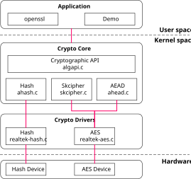
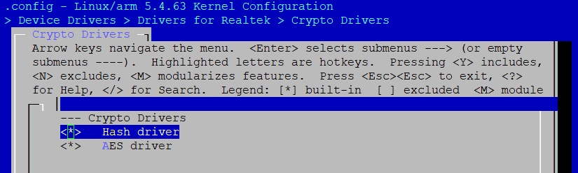

介绍
架构
硬件加密引擎驱动程序遵循Linux的加密子系统。Linux加密子系统提供了一套丰富的加密算法，以及其他数据转换机制和调用这些机制的方法。Linux加密提供了用于内核接口和用户空间的API。
加密引擎软件架构如下图所示。
{kind=link}

加密引擎软件架构包含以下几个部分：
加密驱动程序 加密驱动程序。它包含两个部分：
hash: 加密哈希函数。
AES: 加密AES函数。
加密核心 加密子系统核心驱动程序。
Hash: 加密核心哈希函数算法。
Skcipher: 加密核心对称密钥密码算法。
AEAD: 加密核心带关联数据的认证加密算法。
Cryptographic API: 用于算法的加密 API（即低级 API）。
应用 使用用户空间。
参考 crypto v5.4 或者 crypto v6.6 以获得更多细节。
实现
加密引擎驱动程序实现在以下文件：
文件 |
描述 |
|---|---|
<linux>/drivers/rtkdrivers/crypto/Kconfig |
加密引擎驱动程序 Kconfig |
<linux>/drivers/rtkdrivers/crypto/Makefile |
加密引擎驱动程序 Makefile |
<linux>/drivers/rtkdrivers/crypto/realtek-hash.c |
哈希函数 |
<linux>/drivers/rtkdrivers/crypto/realtek-hash.h |
哈希相关的函数声明、宏定义、结构定义以及其他引用的头文件 |
<linux>/drivers/rtkdrivers/crypto/realtek-aes.c |
AES函数 |
<linux>/drivers/rtkdrivers/crypto/realtek-aes.h |
AES相关的函数声明、宏定义、结构定义以及其他引用的头文件 |
<linux>/drivers/rtkdrivers/crypto/realtek-crypto.h |
加密通用相关的函数声明、宏定义、结构定义以及其他引用的头文件 |
配置
设备树配置
哈希设备树节点：
hash: hash@400C8000 {
compatible = "realtek,ameba-hash";
reg = <0x400C8000 0x2000>;
interrupts = <GIC_SPI 37 IRQ_TYPE_LEVEL_HIGH>;
};
哈希的设备树配置如下所列。
属性 |
描述 |
可配置 |
|---|---|---|
compatible |
哈希驱动的描述。默认值： |
否 |
reg |
哈希设备的硬件地址和大小。默认值： |
否 |
interrupts |
哈希设备的GIC编号。默认值： |
否 |
AES设备树节点：
aes: aes@400C0000 {
compatible = "realtek,amebad2-aes";
reg = <0x400C0000 0x2000>;
interrupts = <GIC_SPI 36 IRQ_TYPE_LEVEL_HIGH>;
};
AES的设备树配置如下所列。
属性 |
描述 |
可配置 |
|---|---|---|
compatible |
AES驱动的描述，默认值： |
否 |
reg |
AES设备的硬件地址和大小。 默认值： |
否 |
interrupts |
AES设备的GIC编号。默认值： |
否 |
编译配置
按需求选择 。

{kind=link}

APIs
用户空间APIs
无。
内核空间APIs
哈希APIs
项 |
描述 |
|---|---|
crypto_register_ahash |
向加密子系统注册异步哈希算法 |
1crypto_unregister_ahash |
从加密子系统注销异步哈希算法 |
crypto_alloc_ahash |
分配一个异步哈希密码句柄 |
crypto_free_ahash |
清零并释放异步哈希句柄 |
ahash_request_alloc |
分配请求数据结构 |
ahash_request_free |
清零并释放请求数据结构 |
ahash_request_set_callback |
设置异步回调函数 |
ahash_request_set_crypt |
设置数据缓存 |
crypto_ahash_setkey |
为加密句柄设置密钥 |
crypto_ahash_init |
初始化消息摘要句柄 |
crypto_ahash_update |
将数据添加到消息摘要进行处理 |
crypto_ahash_final |
计算消息摘要 |
crypto_ahash_finup |
更新并最终确定消息摘要 |
crypto_ahash_digest |
计算缓冲区的消息摘要 |
crypto_ahash_export |
提取当前消息摘要状态 |
crypto_ahash_import |
导入消息摘要状态 |
对称密钥加密接口
项 |
描述 |
|---|---|
crypto_register_algs |
将一系列加密算法注册到加密子系统 |
crypto_register_alg |
将一个加密算法注册到加密子系统 |
crypto_unregister_algs |
从加密子系统中注销一系列加密算法 |
crypto_unregister_alg |
从加密子系统中注销一个加密算法 |
crypto_alloc_skcipher |
分配一个对称密钥加密句柄 |
crypto_free_skcipher |
将加密句柄归零并释放 |
skcipher_request_alloc |
分配请求数据结构 |
skcipher_request_free |
将请求数据结构归零并释放 |
crypto_skcipher_setkey |
为加密设置密钥 |
skcipher_request_set_callback |
设置加密回调函数 |
skcipher_request_set_crypt |
设置数据缓存 |
crypto_skcipher_encrypt |
执行加密操作 |
crypto_skcipher_decrypt |
执行解密操作 |
AEAD加密接口
项 |
描述 |
|---|---|
crypto_register_aead |
向加密子系统注册一个 AEAD（带关联数据的认证加密）密码算法 |
crypto_unregister_aead |
从加密子系统中注销一个 AEAD 密码算法 |
crypto_alloc_aead |
分配一个 AEAD 密钥密码句柄 |
crypto_free_aead |
将 AEAD 句柄清零并释放 |
aead_request_alloc |
分配请求数据结构 |
aead_request_free |
将请求数据结构清零并释放 |
crypto_aead_setkey |
为 AEAD 密码设置密钥 |
aead_request_set_callback |
设置 AEAD 回调函数 |
aead_request_set_crypt |
设置数据缓存 |
aead_request_set_ad |
设置关联数据信息 |
crypto_aead_encrypt |
执行 AEAD 加密操作 |
crypto_aead_decrypt |
执行 AEAD 解密操作 |
内核空间的加密演示位于 <test>/crypto 。